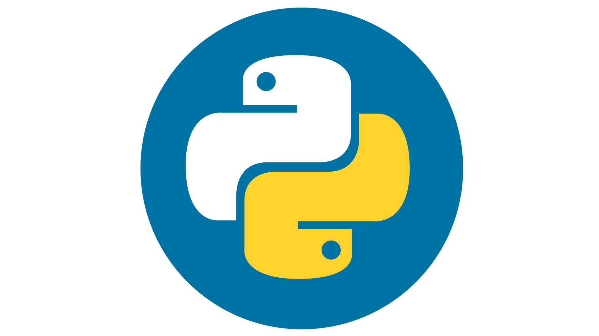
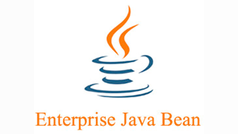
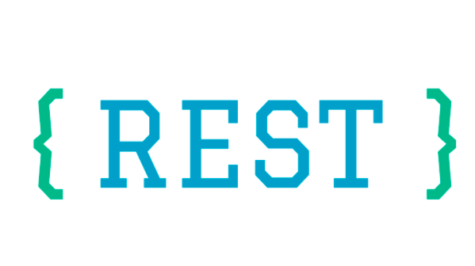
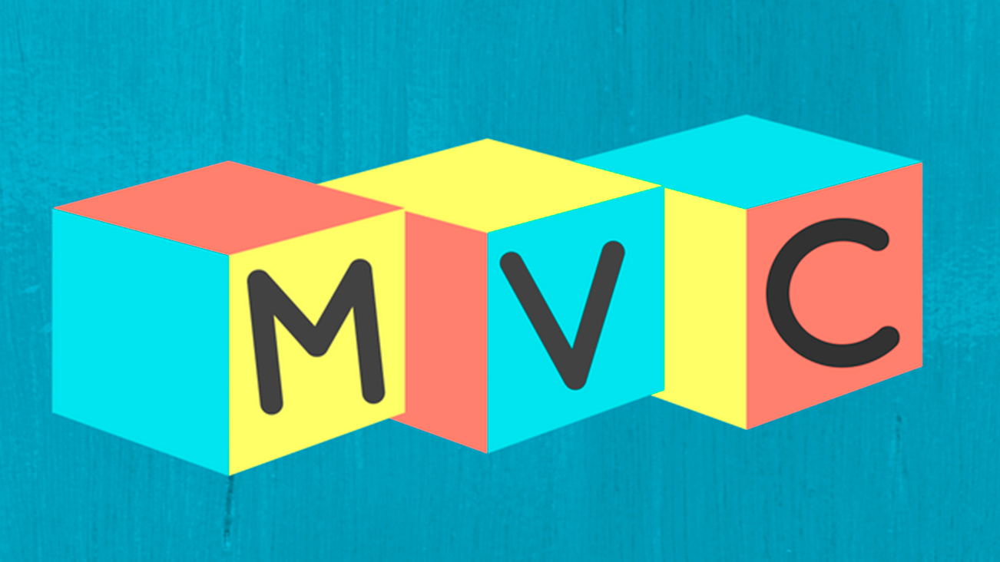
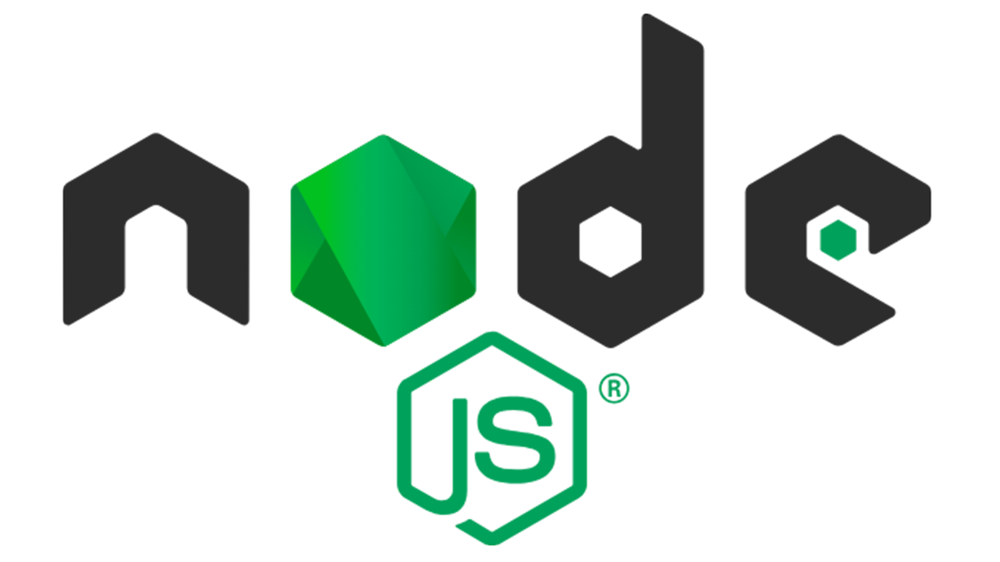

TEMAS
JavaScript

JavaScript es un lenguaje de programación que se utiliza principalmente para crear páginas web dinámicas. Una página web dinámica es aquella que incorpora efectos como texto que aparece y de aviso al usuario.
Python
Python es un lenguaje de programación interpretado cuya filosofía hace hincapié en una sintaxis que favorezca un código legible. Se trata de un lenguaje de programación multiparadigma, ya que soporta orientación a objetos, programación imperativa y, en menor medida, programación funcional.
EJB
Las Enterprise JavaBeans (también conocidas por sus siglas EJB) son una de las interfaces de programación de aplicaciones (API) que forman parte del estándar de construcción de aplicaciones empresariales J2EE (ahora JEE) de Oracle Corporation (inicialmente desarrollado por Sun Microsystems).
Rest
REST define un set de principios arquitectónicos por los cuales se diseñan servicios web haciendo foco en los recursos del sistema, incluyendo cómo se accede al estado de dichos recursos y cómo se transfieren por HTTP hacia clientes escritos en diversos lenguajes. REST emergió en los últimos años como el modelo predominante para el diseño de servicios.
MVC
Modelo-vista-controlador es un patrón de arquitectura de software que separa los datos y la lógica de negocio de una aplicación, de su representación y el módulo encargado de gestionar los eventos y las comunicaciones. Para ello, propone la construcción de tres componentes distintos: el modelo, la vista y el controlador, es decir, por un lado define componentes para la representación de la información, y por otro lado para la interacción del usuario.
Node JS
Node.js es un entorno en tiempo de ejecución multiplataforma, de código abierto, para la capa del servidor (pero no limitándose a ello) basado en el lenguaje de programación ECMAScript, asíncrono, con I/O de datos en una arquitectura orientada a eventos y basado en el motor V8 de Google. Fue creado con el enfoque de ser útil en la creación de programas de red altamente escalables, como por ejemplo, servidores web.